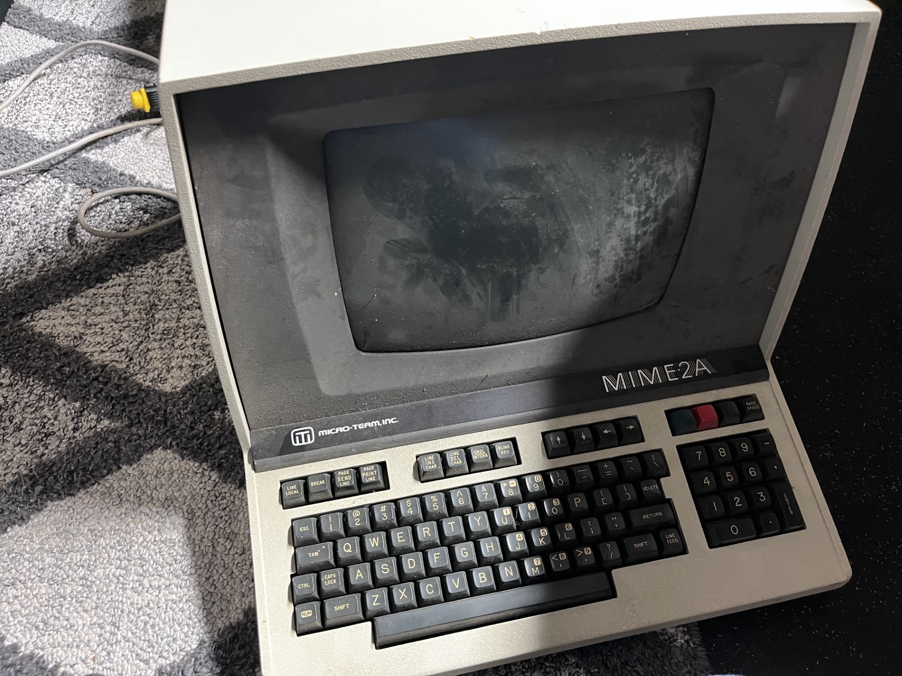
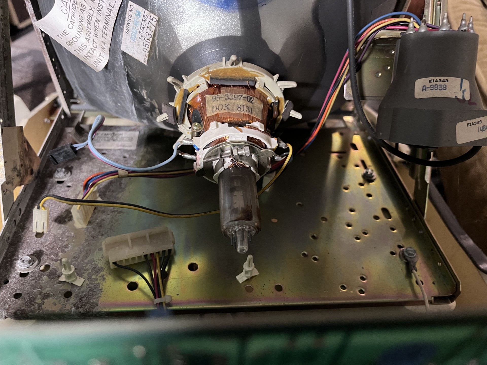
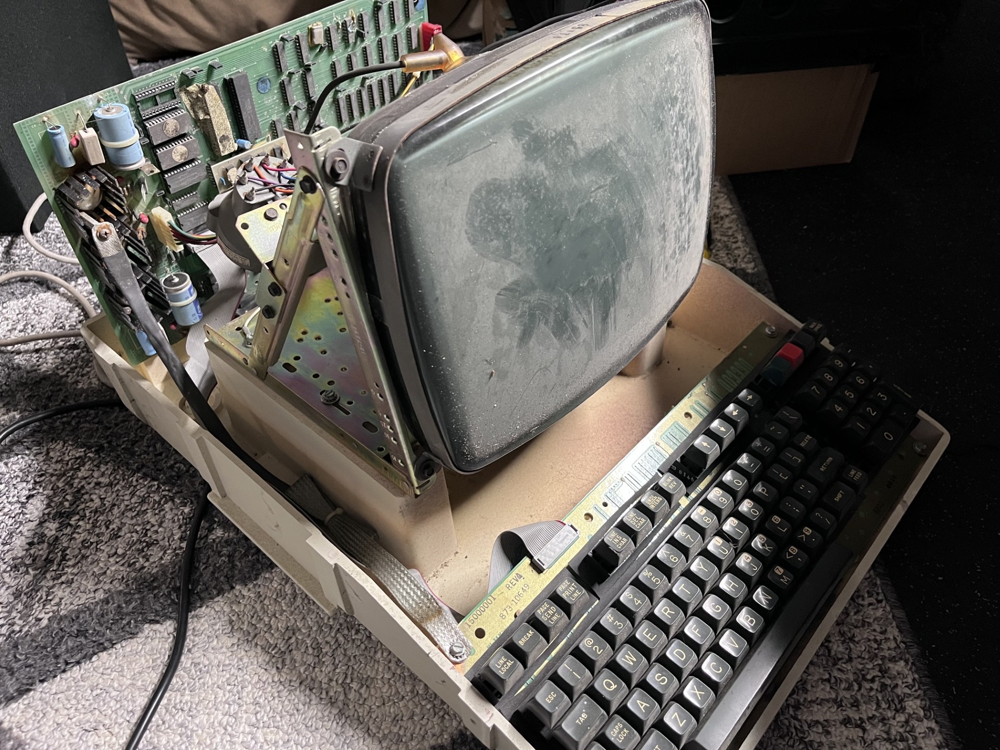
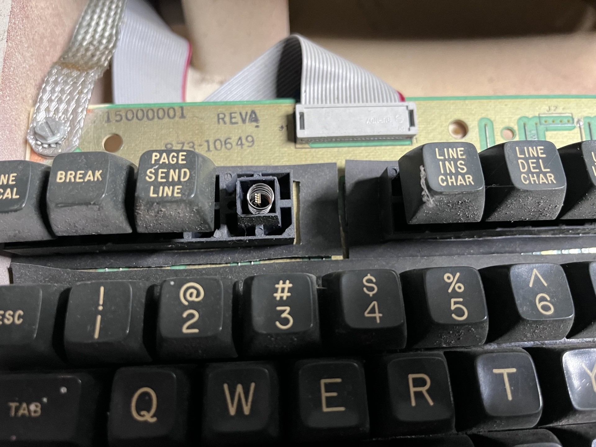

_ _ _ _ _ ____ _ _ _
| \ | (_) ___| |__ ___ | | __ _ ___ | _ \(_) __ _ _ __ ___| |_| |_ ___
| \| | |/ __| '_ \ / _ \ | |/ _` / __| | |_) | |/ _` | '_ \ / _ \ __| __/ _ \
| |\ | | (__| | | | (_) | | | (_| \__ \ | __/| | (_| | | | | __/ |_| || (_) |
|_| \_|_|\___|_| |_|\___/ |_|\__,_|___/ |_| |_|\__,_|_| |_|\___|\__|\__\___/

I picked these computers up today off Facebook Marketplace. These terminals were all sold as broken and none of them turn on. Normally I wouldn't care about broken computers, especially those that don't turn on, but given there were three of them I figured I could frankenstein one from the parts of the other two. Ideally I get all three of them working, and I don't think that will be difficult.
There were three terminals in the lot, all were complete but one of them. This particular unit I thought was "necked" and would probably be the designated parts donor. I was wrong, however this would still be a very difficult unit to get operational. When I shone my light into the vent holes I noticed the neck board was removed. I thought the neck was cracked and that was that.

It was ok, however. I opened the casing (rusted screws were nearly stripped...) and noticed that someone had taken the analog board out of this machine. Looks like I'll have to reverse engineer this part and make my own :) Anyways, I'll be cleaning these machines up in the next few weeks, at least after finals are over. I cannot work on this project at the moment. My embedded systems finals went swimmingly, though.

Here is what these machines look like when opened. Wherever this was stored was humid as I have found a lot of the screws have been rusted. One case proved to be difficult to get into but enough elbow greese I was able to get it opened.
The next update I will try to get the machines clean and in a state that I can actually touch them. They are filthy in this condition. I may paint one of these, baby blue or something to give this terminal a space age vibe. I like the colors of the PDP8 so maybe I'll copy that? I don't know, these are plans for the very far future.

The biggest let down of this entire terminal haul is finding out the keyboard is the common and (personally) awful stackpull variety. I HATE these mechacnical switches with a passion, as I think they are the worst vintage "mechanical" switch you can find (besides foam and foil, but are those even "switches"?).
I plan on taking all these keycaps off and (gently) placing them in a bowl to wash. I may also replace the keyboards outright, these stackpole switches are often very stiff and strain my fingers, it would be trivial to recerate a mechanical modern keyboard for this.